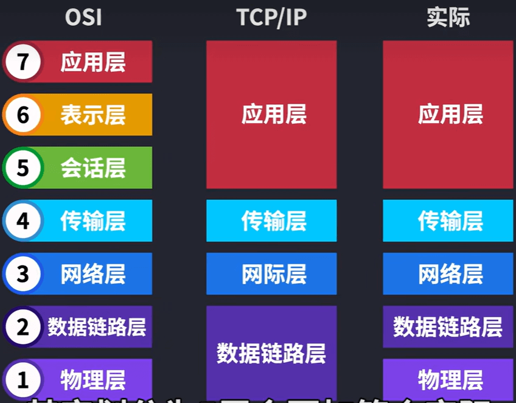
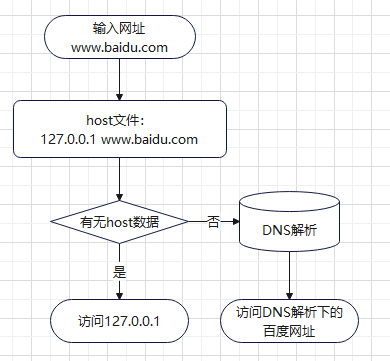

计算机网络知识
计算机网络知识
OSI模型
设备：
物理层
最开始的连接模型

集线器（Hub）
随着越来越多的人加入，你发现身上开的网口实在太多了，而且网线密密麻麻，混乱不堪。（而实际上一台电脑根本开不了这么多网口。
于是你们发明了一个中间设备，你们将网线都插到这个设备上，由这个设备做转发，就可以彼此之间通信了，本质上和原来一样，只不过网口的数量和网线的数量减少了，不再那么混乱。
你给它取名叫集线器，它仅仅是无脑将电信号转发到所有出口（广播），不做任何处理，你觉得它是没有智商的，因此把人家定性在了物理层。

广播和标识：
由于转发到了所有出口，那 BCDE 四台机器怎么知道数据包是不是发给自己的呢？
首先，你要给所有的连接到交换机的设备，都起个名字。原来你们叫 ABCD，但现在需要一个更专业的，全局唯一的名字作为标识，你把这个更高端的名字称为 MAC 地址。
你的 MAC 地址是 aa-aa-aa-aa-aa-aa，你的伙伴 b 的 MAC 地址是 bb-bb-bb-bb-bb-bb，以此类推，不重复就好。
这样，A 在发送数据包给 B 时，只要在头部拼接一个这样结构的数据，就可以了。
B 在收到数据包后，根据头部的目标 MAC 地址信息，判断这个数据包的确是发给自己的，于是便收下。
其他的 CDE 收到数据包后，根据头部的目标 MAC 地址信息，判断这个数据包并不是发给自己的，于是便丢弃。
数据链路层
交换机
交换机（光猫）通常用来组建局域网，作为局域网通信的重要枢纽，通过二层/三层交换快速转发报文；：mac地址+端口识别通过Mac链表，来找到目的地的mac地址发送。
到达交换机时，交换机内部通过自己维护的 MAC 地址表，发现目标机器 B 的 MAC 地址 bb-bb-bb-bb-bb-bb 映射到了端口 1 上，于是把数据从 1 号端口发给了 B，完事~
你给这个通过这样传输方式而组成的小范围的网络，叫做以太网。
当然最开始的时候，MAC 地址表是空的，是怎么逐步建立起来的呢？
假如在 MAC 地址表为空是，你给 B 发送了如下数据
桥接：

网络层
交换机已经无法记录如此庞大的映射关系了。
此时你动了歪脑筋，你发现了问题的根本在于，连出去的那根红色的网线，后面不知道有多少个设备不断地连接进来，从而使得地址表越来越大。
那我可不可以让那根红色的网线，接入一个新的设备，这个设备就跟电脑一样有自己独立的 MAC 地址，而且同时还能帮我把数据包做一次转发呢？
这个设备就是路由器，它的功能就是，作为一台独立的拥有 MAC 地址的设备，并且可以帮我把数据包做一次转发，你把它定在了网络层。
NAT:网络地址转换技术，可以将大量私网地址，转换成1个公网地址。从而实现很多内部用户共用1个公网地址来访问Internet，起到节省IP地址的作用
路由器（网关）
网关是一种网络硬件设备或网络节点，旨在将两个不同的网络连接在一起，允许用户跨多个网络进行通信

路由器用来连接不同的网络，通过路由协议（路由表）保证互联互通，确保将报文转发到目的地；
现在 A 要给 C 发数据包，已经可以成功发到路由器这里了，最后一个问题就是，路由器怎么知道，收到的这个数据包，该从自己的哪个端口出去，才能直接（或间接）地最终到达目的地 C 呢。
路由器收到的数据包有目的 IP 也就是 C 的 IP 地址，需要转化成从自己的哪个端口出去，很容易想到，应该有个表，就像 MAC 地址表一样。
这个表就叫路由表。
至于这个路由表是怎么出来的，有很多路由算法，本文不展开，因为我也不会哈哈~
不同于 MAC 地址表的是，路由表并不是一对一这种明确关系，我们下面看一个路由表的结构。
| 目的地址 | 子网掩码 | 下一跳 | 端口 |
|---|---|---|---|
我们学习一种新的表示方法，由于子网掩码其实就表示前多少位表示子网的网段，所以如 192.168.0.0（255.255.255.0） 也可以简写为 192.168.0.0/24
| 目的地址 | 下一跳 | 端口 |
|---|---|---|
这就很好理解了，路由表就表示，http://192.168.0.xxx 这个子网下的，都转发到 0 号端口，http://192.168.1.xxx 这个子网下的，都转发到 1 号端口。下一跳列还没有值，我们先不管
配合着结构图来看（这里把子网掩码和默认网关都补齐了）
传输层
会话层
表示层
应用层
应用层协议HTTP，
端口
DNS 服务器
https://blog.csdn.net/qq_39847278/article/details/127596172
hosts文件是一个用于储存计算机网络中各节点信息的计算机文件；host文件所在位置：
1 | C:\Windows\System32\drivers\etc |
作用是将一些常用的网址域名与其对应的IP地址建立一个关联“数据库”，当用户在浏览器中输入一个需要登录的网址时，系统会首先自动从Hosts文件中寻找对应的IP地址。
原理：
1、首先需要明白hosts优先级高于dns域名解析服务器，在hosts文件中把www.baidu.com解析为127.0.0.1,那么浏览器实际访问的是127.0.0.1这个本地地址，并非百度域名对应的IP地址。所以网址是打不开的。
2、比如说有的网站服务器换IP了，但是运营商dns那边还没有相关信息，那么你是无法访问网站的。比方www.123.com把IP地址换成了111.111.111.111。我们该如何修改呢？在hosts文件中填写111.111.111.111 www.123.com那么就可以正常访问了。如果它的IP好记，当然你也可以在浏览器中输入111.111.111.111或者111.111.111.111:端口
3、有些网站有好多服务器分布在不同的地方，不同的地方IP地址也不一样，但是用的是同一个域名。比如www.123.com有两个IP地址，一个在北京IP地址是1.2.3.4， 一个在河南，IP地址是245.63.2.8。如果你在河南这边， 我们可以通过hosts修改来让我们访问www.123.com时锁定在河南服务器。你可以在hosts中写入245.63.2.8 www.123.com
使用：应用场景
1、加快域名解析
对于要经常访问的网站，我们可以通过在Hosts中配置域名和IP的映射关系，这样当我们输入域名计算机就能很快解析出IP，而不用请求网络上的DNS服务器。
2、方便局域网用户
在很多单位的局域网中，会有服务器提供给用户使用。但由于局域网中一般很少架设DNS服务器，访问这些服务要输入IP地址，相当麻烦。在hosts中配置服务器名称 与 IP映射，这样以后访问的时候我们输入这个服务器的名字。
3、屏蔽网站
将一些经常弹广告或垃圾网站，利用hosts把该网站的域名映射到错误的IP或自己计算机的IP即可，我们在Hosts写上以下内容：
127.0.0.1 屏蔽的网站域名 或 0.0.0.0 屏蔽的网站域名
4、顺利连接系统
对于Lotus的服务器和一些数据库服务器，在访问时如果直接输入IP地址那是不能访问的，只能输入服务器名才能访问。那么我们配置好hosts文件，输入服务器名就能顺利连接了。
最后：注意如果实际的IP有变动，也需要手动修改hosts配置